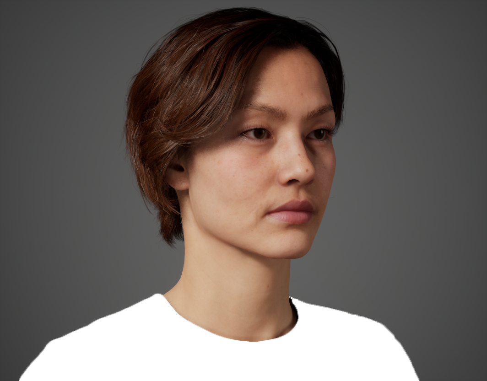
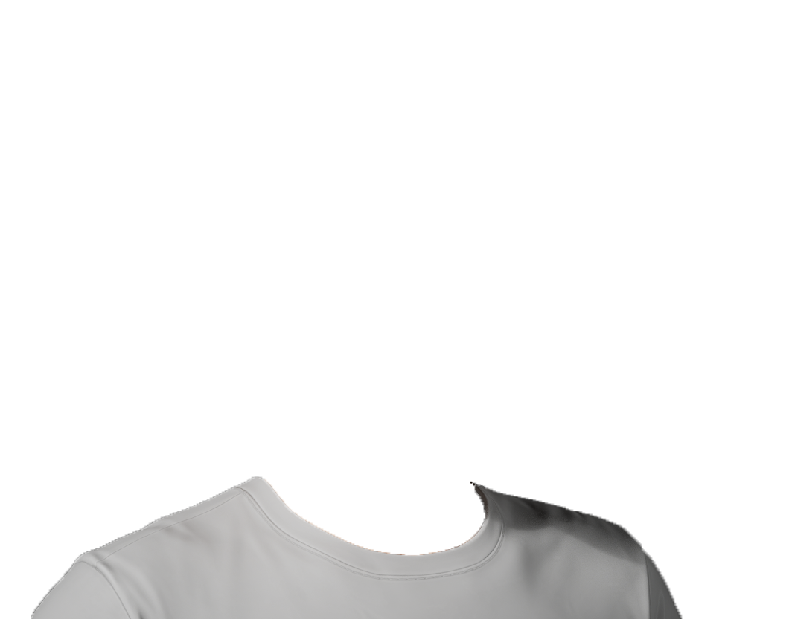
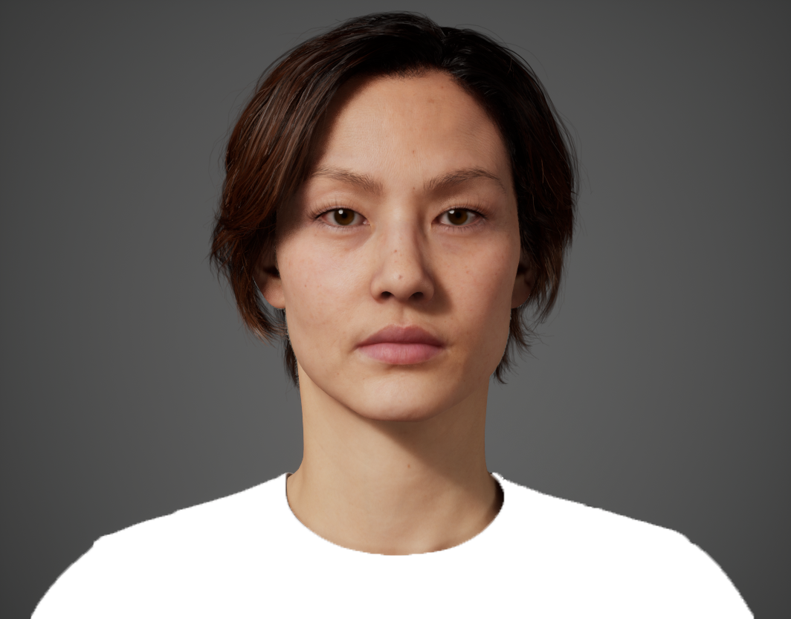
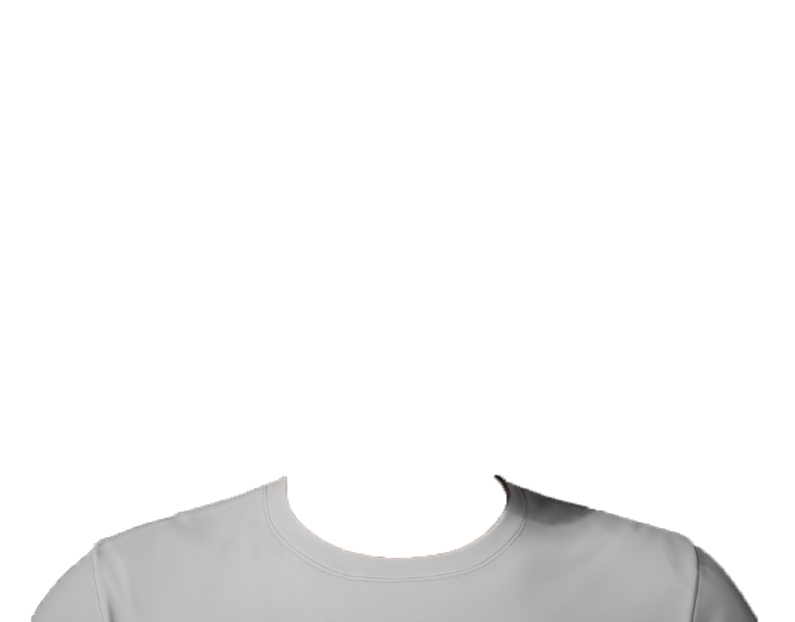
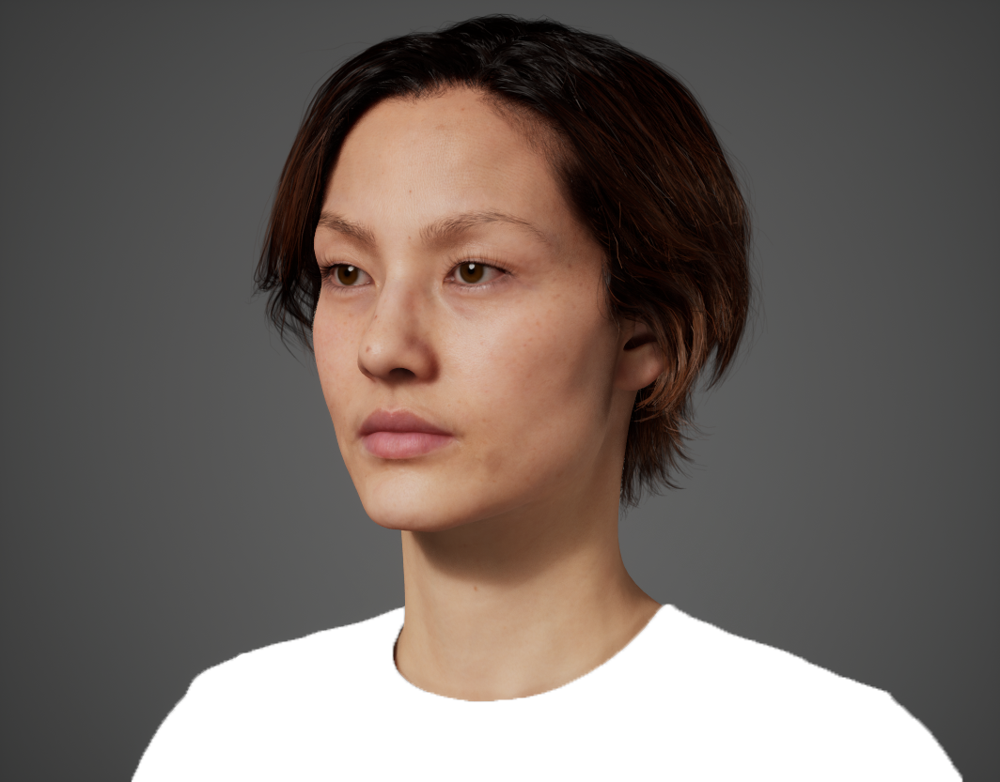
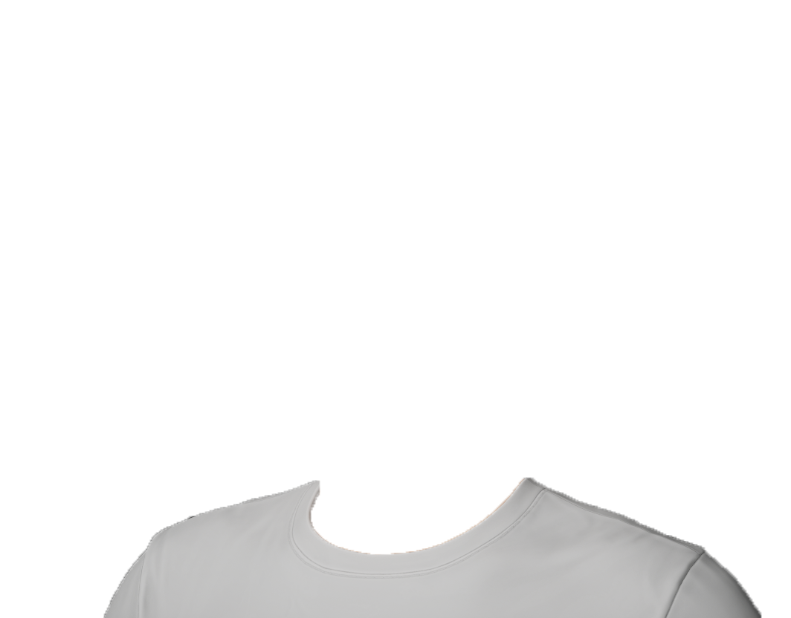

Acceptable Color Range
Please adjust the sliders for each of the 6 base colors to find the most suitable color.
Right View


Front View


Left View


● Adjusting
● Pending
● Pending
● Pending
● Pending
● Pending
■ Bluish (Cool)
Yellowish (Warm) ■
■ Darker
Lighter ■
■ Muted（Low Chroma）
Vivid（High Chroma） ■
Please review and adjust all 6 colors before submitting.
Submit All 6 Color Results